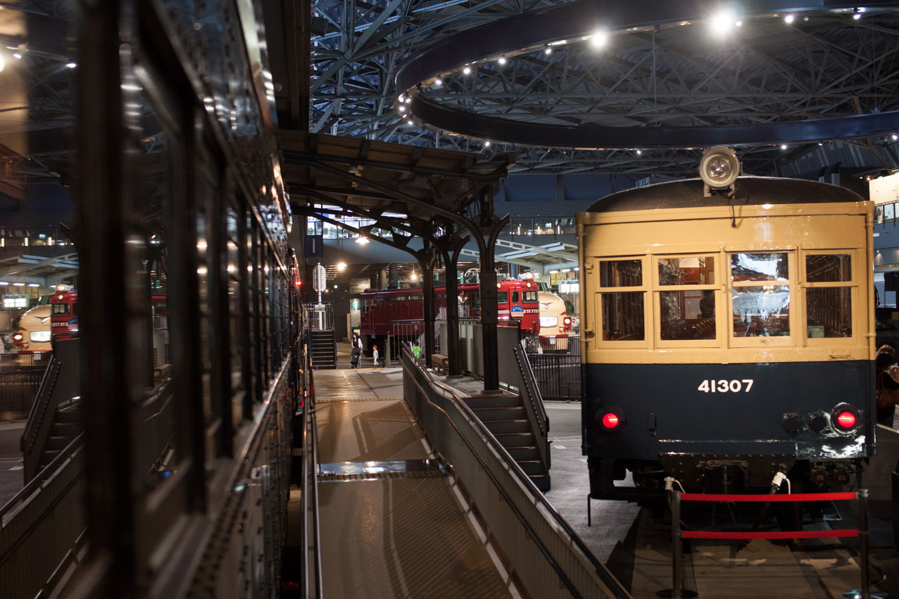
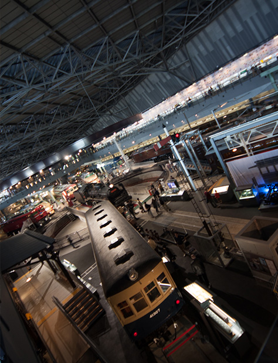
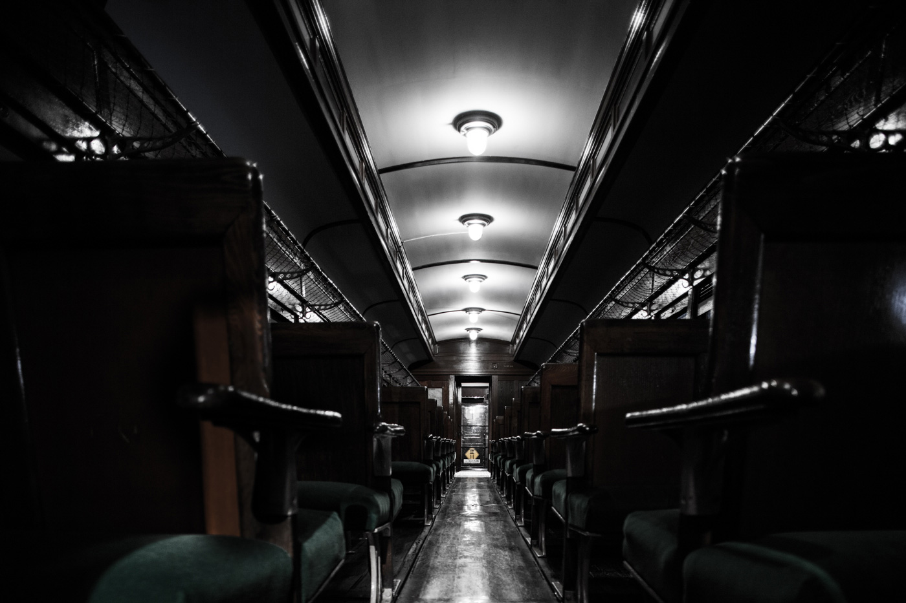
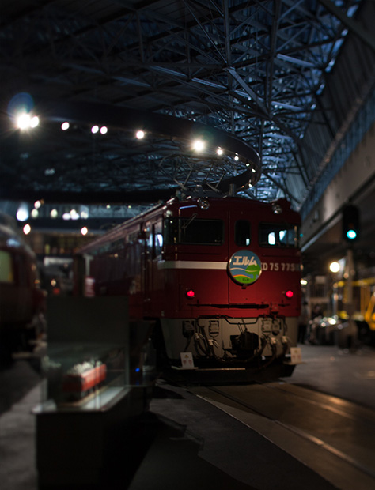
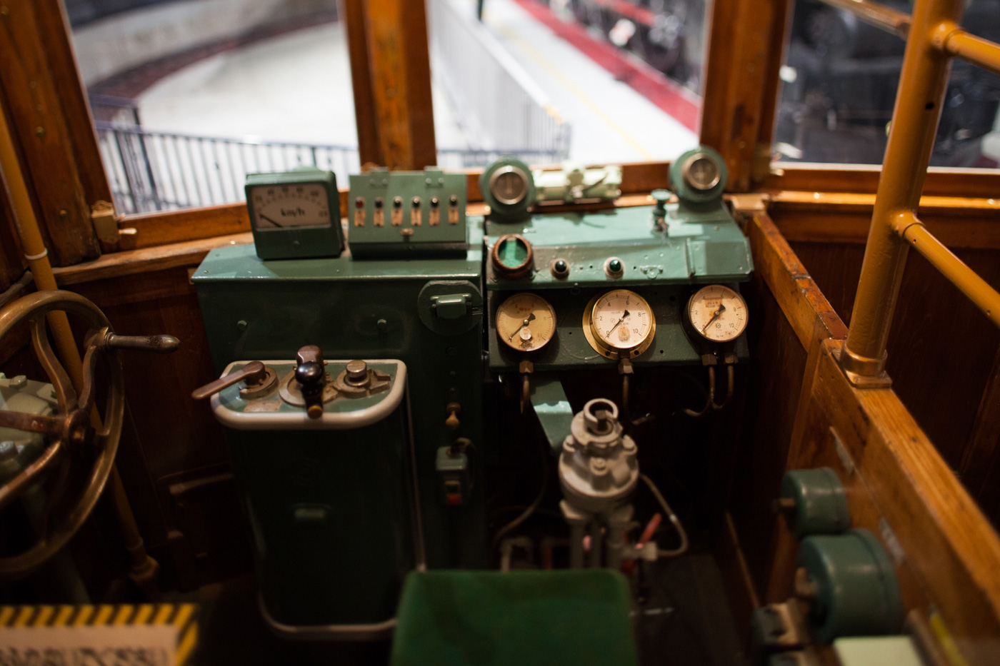
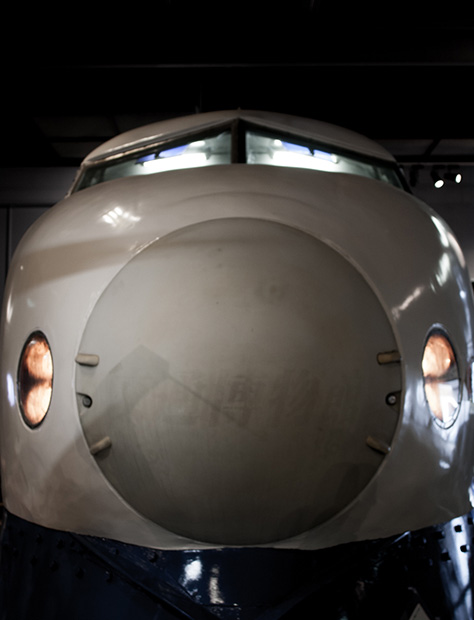

jQuery DESIGN METHOD

鉄道博物館
鉄道博物館は埼玉県さいたま市大宮区大成町にある鉄道に関する博物館である。
東日本旅客鉄道（JR東日本）の創立20周年記念事業のメインプロジェクトとして2006年5月14日に閉館した交通博物館に替わる施設として、2007年10月14日の鉄道の日に開館した。公益財団法人東日本鉄道文化財団が運営している。愛称は鉄博（てっぱく）。
テキスト引用：wikipedia


コンセプト
日本と世界の鉄道に関する遺産と資料を広く人々に公開し、かつ旧日本国有鉄道の改革および東日本旅客鉄道に関する資料を保存し調査研究を行う。
鉄道システムの変遷を鉄道車両などの実物展示を中心に各々の時代背景を交えながら産業史として公開する。
鉄道の原理・仕組みと最新の鉄道技術、将来の鉄道技術を子供たちに模型やシミュレーション、遊具を使いながら体験的に学習できる。
テキスト引用：wikipedia


利用案内
- ■入館料金
- 大人：個人 1,000円 / 団体 800円
- 小児（小・中学生・高校生）：個人 500円 / 団体 400円
- 幼児（3歳 - 未就学児）：個人 200円 / 団体 100円
- ■開館時間
- 10時-18時（入館時間は17:30まで）
- ■休館日
- 毎週火曜日および年末年始
テキスト引用：wikipedia

Yutaka Hayashi")